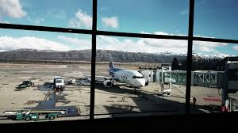

Llegada a Bariloche
El avión aterrizó suavemente en el aeropuerto de Bariloche. Al bajar, el aire fresco de la montaña y el aroma a pinos nos dio la bienvenida. A lo lejos, las cumbres nevadas de la Cordillera de los Andes brillaban bajo el sol.
Explorando el centro
Caminamos por el centro de la ciudad, con sus edificios de piedra y madera que recordaban a un pueblo alpino. En el Centro Cívico, nos detuvimos a admirar la arquitectura y la imponente estatua de San Carlos de Bariloche.
Navegando el Lago Nahuel Huapi
Al día siguiente, fuimos a andar en kayak por el lago Nahuel Huapi. Las aguas cristalinas reflejaban el cielo azul, y el paisaje era tan impresionante. Visitamos la Isla Victoria, donde recorrimos senderos rodeados de árboles centenarios.

Caminata por el Bosque de arrayanes
Al tercer día decidimos ir a visitar el bosque de arrallanes, caminamos un buen tramo hasta llegar a un mirador donde nos quedamos un tiempo compartiendo unos mates